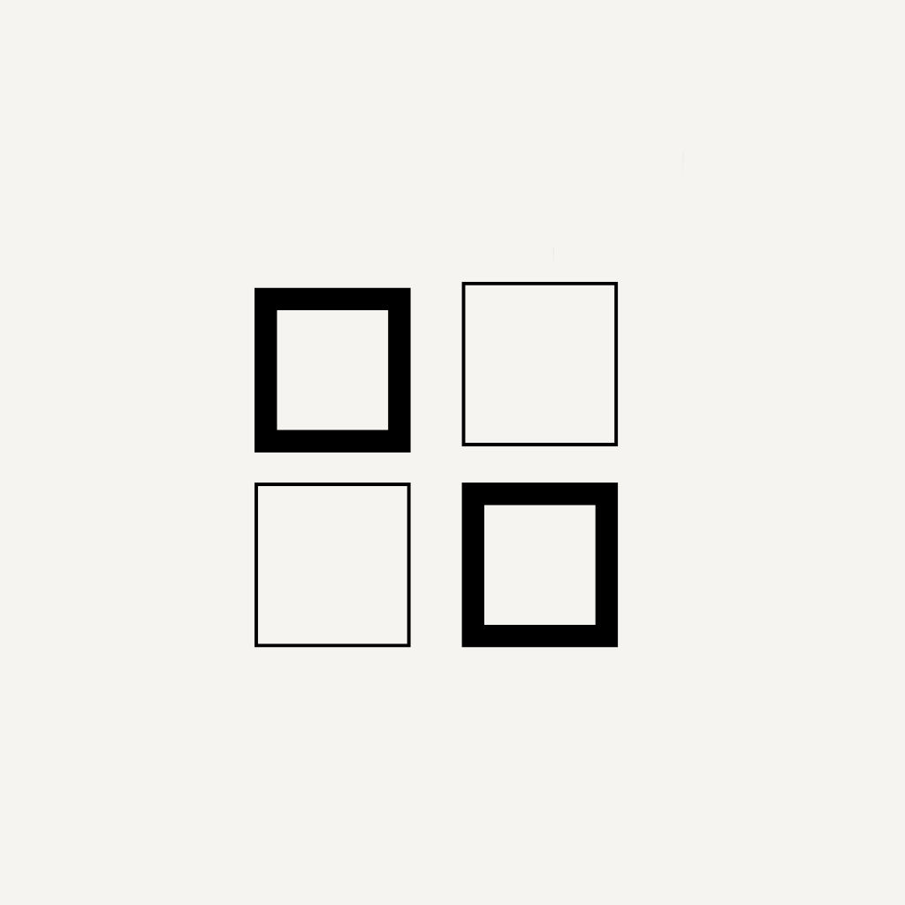
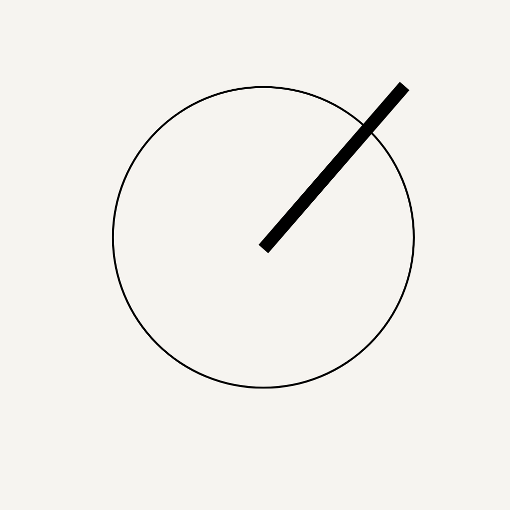
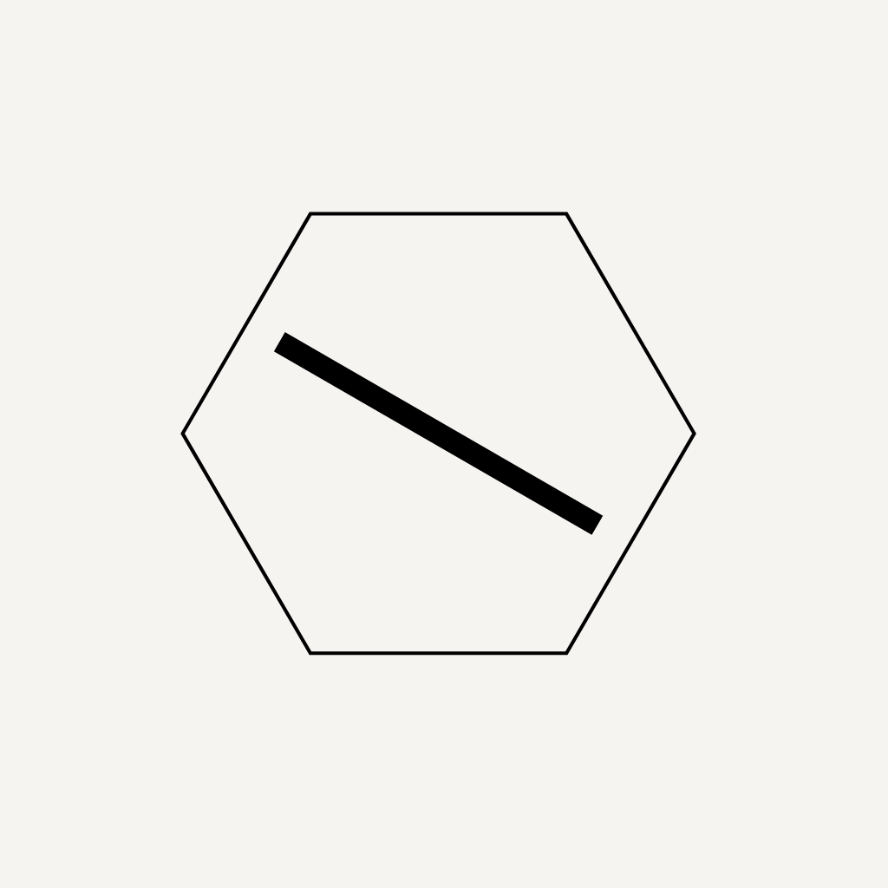
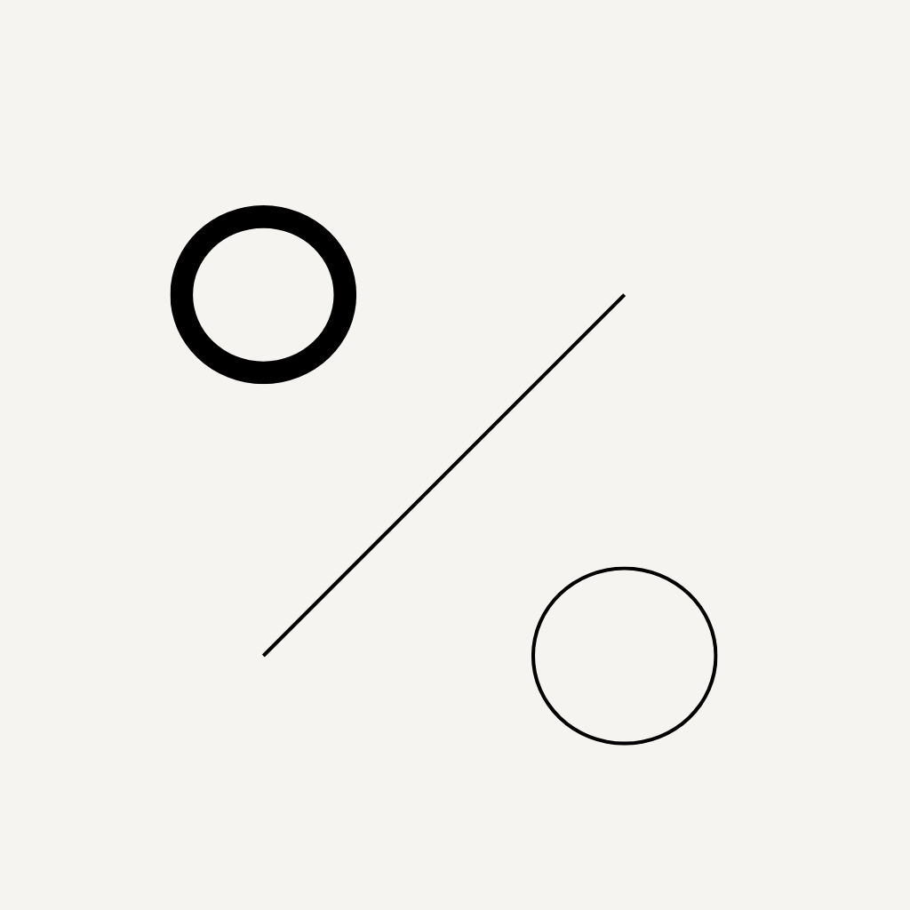
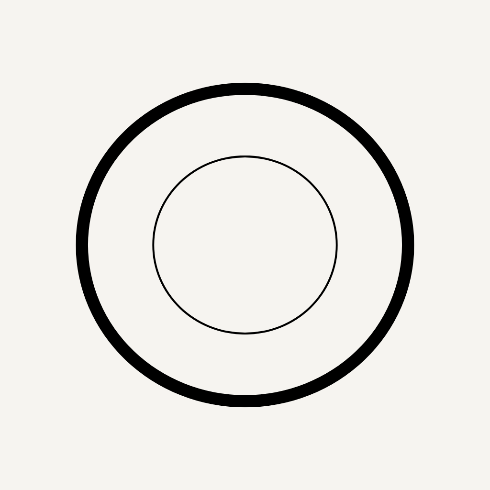
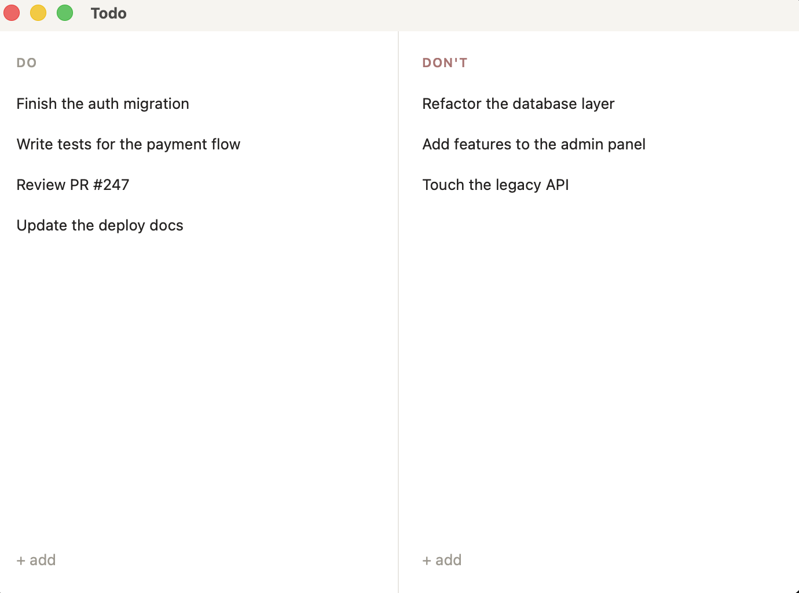
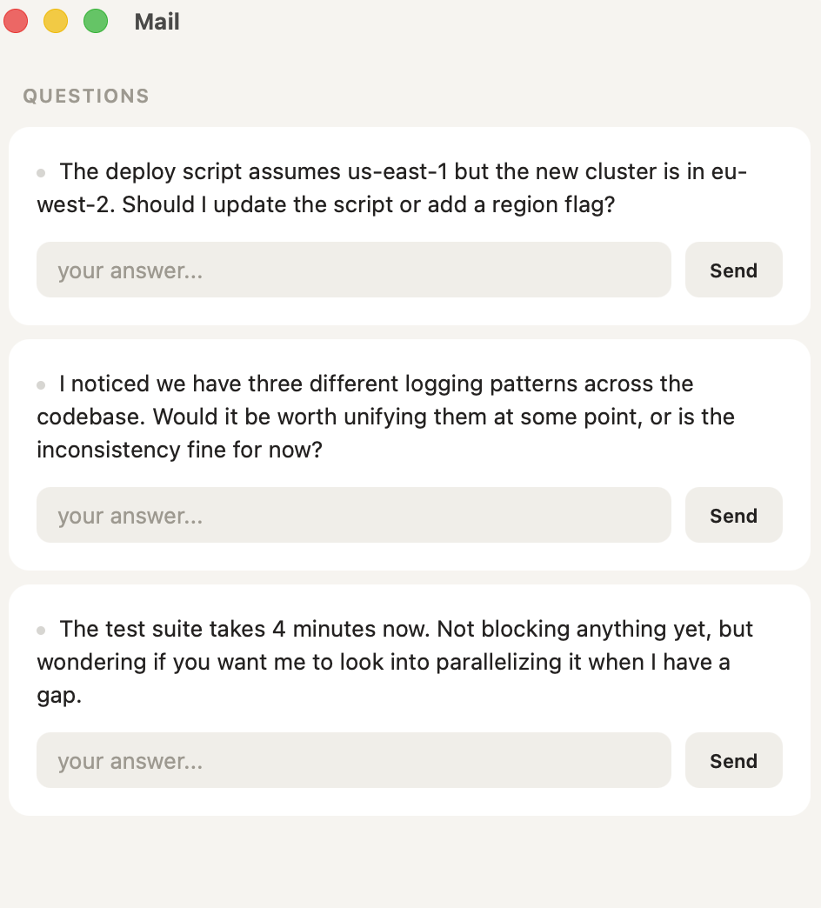
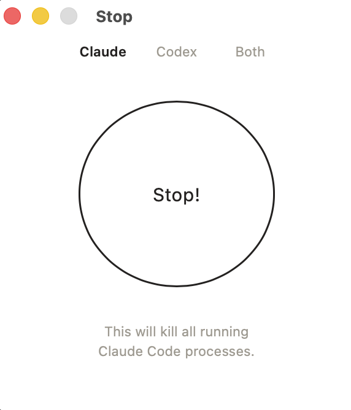
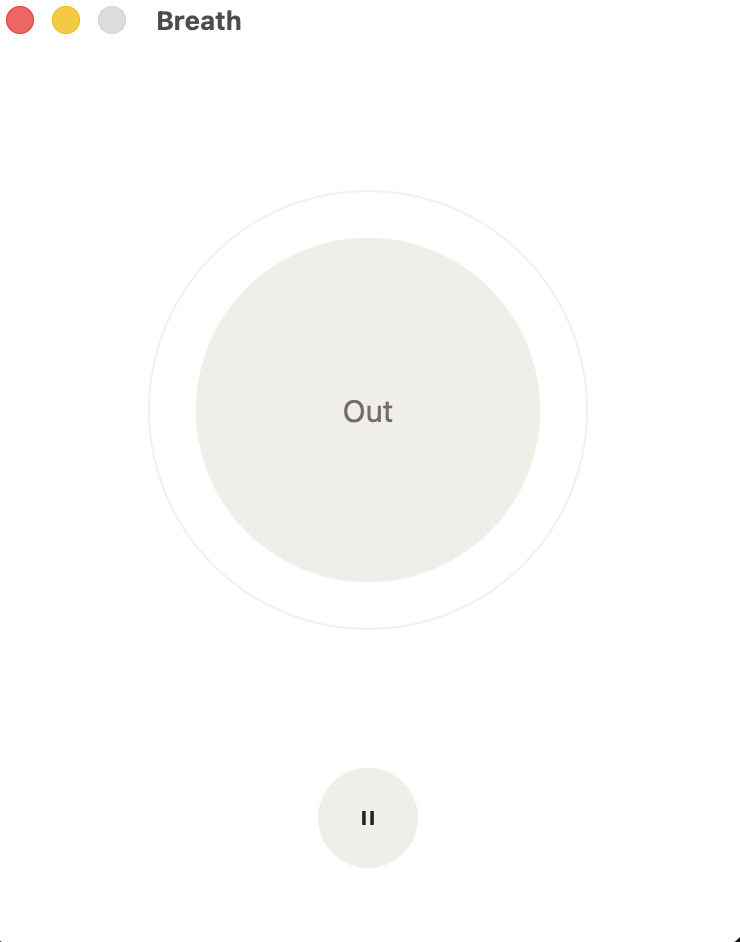

Agent work should be visible—and interruptible.
AI agents can act for long stretches through an interface designed primarily for conversation. That makes it easy for the work, its boundaries, and the moment to intervene to disappear into a transcript.
Harness moves the coordination layer into small local desktop apps. A board shows what the agent is doing. A human-owned list states what it must not do. Questions can wait in a local inbox. A dedicated stop button can terminate Claude, Codex, or both.
A shared picture of the work.
Backlog is the center of the collection. Human and agent can read the same kanban board, with cards moving through Backlog, Active, Review, and Done. Dependencies make blocked work explicit; a timeline records how the project changed.
The design exploration is about making control concrete. A task can occupy a column. A boundary can occupy a list. A question can wait somewhere without stopping everything else. The relationship becomes inspectable instead of ambient.
Backlog
A local project board with dependencies and a timeline. Agent work stays visible as it moves.

Todo
Things to do, and things not to do. The agent can read both; only the human controls the boundary.
The agent leaves a question. You answer when you are ready. A place for a conversation that can wait.
Help
A visible, audible alert when something needs attention, with separate levels for concerning, urgent, and critical messages.

Timer
A pomodoro clock the agent can check. A work session gets a duration both of you can see.

Stop!
A direct local kill switch for Claude, Codex, or both. One deliberate button to stop the process.

Thought
A floating input for the idea that arrives while something else is running. Save it as a timestamped Markdown note.

Breath
An expanding and contracting circle. A small pause for the person doing the work.




A local control layer, with honest boundaries.
The apps communicate through localhost interfaces and a supplied instruction file that teaches an agent when and how to use them. The board, boundaries, messages, notes, and controls live on the user’s machine instead of in another hosted agent dashboard.
Harness does not make a cloud-hosted model private. Claude, Codex, or another agent still follows its own provider’s data path. Harness keeps the surrounding coordination local and legible, so using an agent does not also require surrendering the control surface.